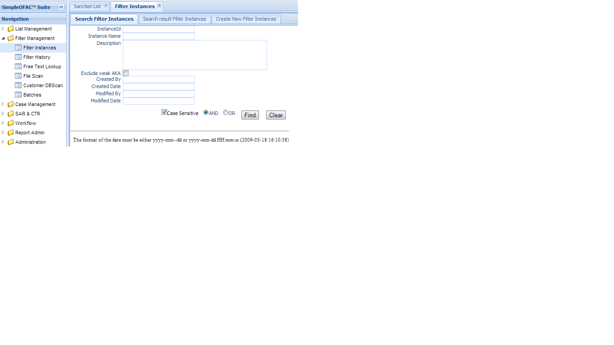
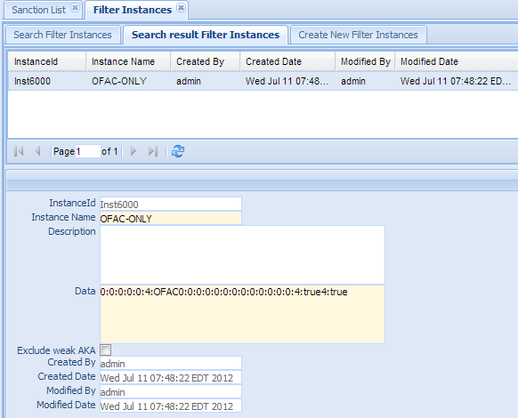
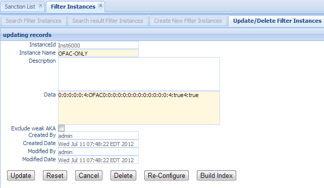
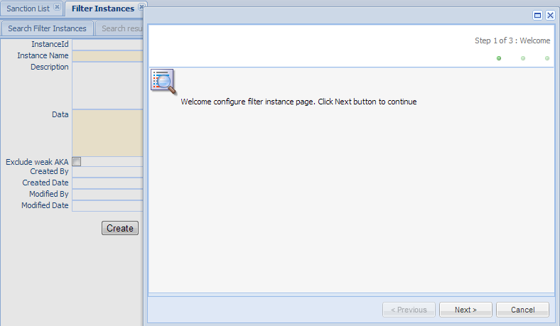
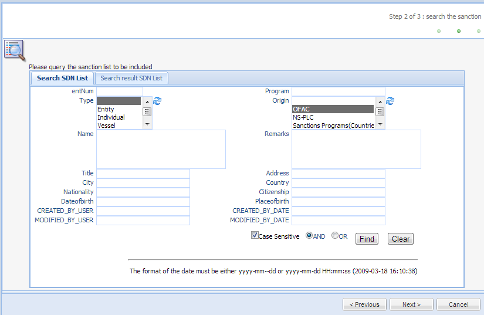
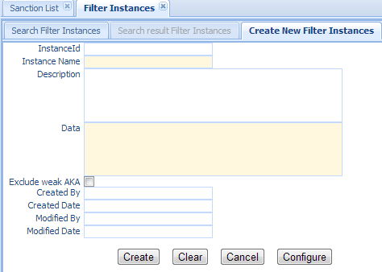

Screening Instance (Engine)¶
Screening instance, also called Screening engine is a service that scans text/message against the Screening Instance, gives alert or no alert result. Screening Instance manage those Screening instances/engines. Currently we only support one physical index and one Screening engine at a time; which also means that at any time, there are only one Screening engine running, using the index that is last build (see Build-Index below). The last build index will override the previous one.
Click the Screening Instance in the left navigation menu under Screening management, a new Screening Instance Tab folder will be created in the right panel. There are 3 sub-Tab folders, Search Screening Instance, Search Result Screening Instance and Create New Screening Instance.
Search Screening Instance¶
Search Criteria
| Field Name | Description |
|---|---|
| InstanceId | This is the unique number for the Screening Instance entry in the system . |
| Instance Name | Name of the Screening Instance. |
| AND | Select AND radio box if you want those criteria add together. |
| OR | Select OR radio box if you want to get the result if either criteria meet |
Functional buttons¶
- Find: – click Find button to search.
- Clear:– click Clear button to clear all the criteria.
Search Result Screening Instance¶
The top part is the table, shows the list of the screening instances that meet the search criteria. The bottom part is the details of the selected entry.
Update/Delete Screening Instance¶
Double Click the selected record in the table to modify this entry. A new Tab folder Update/Delete Screening Instance will be added, as show below.
Functional buttons¶
Update: – make changes on the screening instance, and save and switch back to “Search result Screening Instance” Tab. Some of the fields in this form are read only, like Instance Id, created/modified user and date. The configuration Data field is read only also, it can be modified via the Re-Configure button.
Reset:– reset the data to its initial value, discard all the changes.
Cancel:– Cancel this change and switch back to “Search result Screening Instance” Tab.
Delete:– Delete this entry. Then switch back to “Search result Screening Instance” Tab.
Re-Configure – Click this button to open a configure wizard to set up the configuration data, as below:
Click Next Button to go to wizard step 2
This is a Sanction List search Search Sanction List panel, allowing user to select the sanction list entries to be included in this screnning instance. It is pre-populated with the data in the Config Data field.
Set search criteria; then click Find Button will get a list of sanction list entries that meet the search criteria. Those sanction list entries will be indexed and used by this screening instance to scan customer data and/or payment transaction.

Click Next button to go to wizard step 3: Save the configuration

- Click Finish will save the configuration into Configuration Data field.
- Click Cancel to discard those changes.
Build Index – Click this button to Build search index using the sanction list set in the previous step.
Note
Search index must be re-built, in order to take affect the configuration data changes. This is a very important step. Screening Instance uses search index to scan against customer data or transaction messages.
Create New Screening Instance¶
Select the “Create New Screening Instance” Tab to create a new entry.
| Field Name | Description |
|---|---|
| InstanceId | This is the unique number for the screening Instance entry in the system. |
| Instance Name | Name of the filter screening. This is a mandatory field. |
| Description | Description of this entry. |
| Data | Configuration data to define what sanction list entries should be included in the search index. User has to set the data value via Configure button. |
| CreatedByDate | Date and Time when this Screening Instance entry is created. It is a read only field. |
| CreatedByUser | User who create this Screening Instance entry. It is a read only field. |
| ModifiedByDate | Last modified date and time; It is a read only field. |
| ModifiedByUser | Last modified user; It is a read only field. |
Functional buttons¶
- Create: – Click the Create button to create a new Screening Instance entry and switch to “Search result Screening Instance” Tab. Instance Name is a mandatory field, if it is empty, an error message will show. Data field must be set via Configure Button. If Data field is empty, all the sanction list entries will be included when index is built.
- Clear:– Click the Clear button to clear all the fields
- Cancel:– Click the Cancel button to cancel operation and switch back to “Search result Screening Instance” Tab.
- Configure –Click the Configure button to open a configure wizard to set up the configuration data. (see Re-Configure in Update/Delete Screening Instance section Update/Delete Screening Instance).